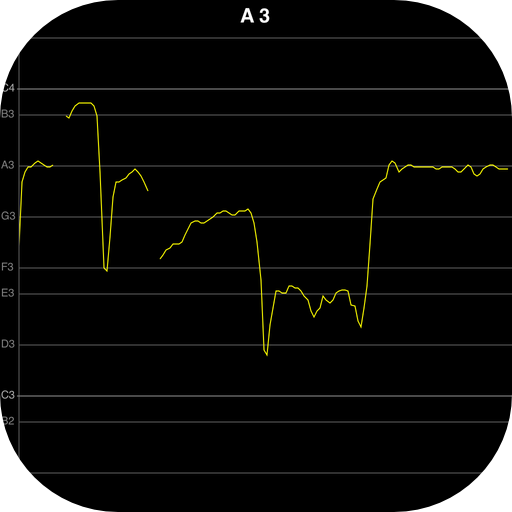

リアルタイム音程解析 VSTプラグイン(vst_pitch)
最終更新日：2018/8/4
音程をリアルタイムにグラフ表示するVSTプラグインです。
MIDIトラックの出力を入力することで、MIDIの音程を重ねて表示することができます。
視覚的に音程が正しいか確認することができます。
VSTプラグインなので、DAWで録音した音声の解析も可能です。
Tweet
【動作環境】
- Windows7 32/64bit 以上
- VSTプラグインに対応したDAWソフト(Cubase等)
- 対応サンプリングレートは44100Hzのみ
【ダウンロード】
バージョン 1.04
バージョン 1.03
バージョン 1.02
バージョン 1.01
バージョン 1.00
使用するVSTホスト(DAWソフト)に合わせてダウンロードしてください。
bitが異なる場合、使用できないか、音飛びが発生します。
新しいバージョンに入れ替えた場合は、VSTプラグインを追加し直してください。
【インストール方法】
ダウンロードしたzipファイルを任意のフォルダに解凍した後、DAWソフトのVSTプラグインの設定に追加してください。
【使い方】
VSTプラグインの使い方はDAWソフトによって異なりますので、各DAWソフトのマニュアル等を参照してください。ここでは、Cubase7.5とREAPER 0.999での使い方を説明します。
その他の使い方
Hold機能
画面右上の「Hold」ボタンをクリックすると、画面表示を停止できます。再開するにはもう一度「Hold」ボタンを押してください。解析パラメータ設定
DAWソフトでVSTパラメータの設定ができます。設定方法はDAWソフトによって異なるため、DAWソフトのマニュアルを参照してください。
編集できるパラメータは、以下のとおりです。
VolThres：音量の閾値(ver.1.01ではThresholが同じ意味)
Threshol：ピッチと認識するスペクトル強度の閾値
440Hz=：440HzをA4にするか、A3にするか(ver.1.01から)
Resoluti：解析周波数精度（Low：低い、Mid：普通、High：高い）
解析精度を高くすると、レスポンスは悪くなります。
AnaBegin：解析範囲(最低音階)
AnaEnd：解析範囲(最高音階)
DispRang：1画面に表示する音階の数(半音単位)
ビブラートの詳細に見たいなどの場合、音階数を少なくするとより1音階が広く表示されます。
【おすすめの使い方】
シングルCDについてくるカラオケのトラックと、メロディを打ち込んだMIDIトラックを用意すると、
カラオケ採点機能のようなことができます。（採点はしませんが、視覚的に音程を確認できます。）
メロディをMIDIにするのは、耳コピができないと敷居が高いのと、少し根気がいる作業です。
私の場合は、1曲、1～2時間くらいかかってしまいます。
耳コピができない場合も、自分で取り込んだCDを再生しながら歌った音程が表示されるので、
それをMIDIに打ち込んで、打ち込んだMIDIを鳴らしてみて合っているか確認すれば、
時間はかかりますが誰でも打ち込みは可能です。
楽譜を買ってしまえばてっとり早いです。
CDのフルトラックとカラオケトラックから、歌声りっぷでVocalトラックを作って、
CubaseのVariAudioや、WaveToneを使って音程解析する手もあります。
上記の方法と併用すると効率よく耳コピできます。
曲のテンポの設定は、DAWの解析機能や、WaveToneを使って自動で解析できます。
CDを取り込んだトラックは始まりが拍の開始と合っていないので合わせる作業が必要です。
私の場合は、自作のソフトで曲のテンポと開始位置を解析しています。（他の方が使えるものではないので公開はしてません。）
【著作権/免責事項】
本ソフトウェアはフリーソフトです。なお、著作権は作者に帰属します。
また、本ソフトウェアは使用した結果については、作者は一切責任を負えないためご了承ください。
【サポート/連絡先】
このページの末尾のメールアドレスで承ります。
【参考】
本ソフトは、元々フリーソフトで公開していた音階＆リズム測定ソフト Pitch&Rhythm Monitor（prmonitor）に、
カラオケトラックの再生機能とMIDIトラックを重ねて表示する機能を付けたいと思っていたのですが、
複数トラックの対応とMIDIトラックの再生機能はDAWソフト相当の作り込みが必要になるので、
個人の趣味で作るには労力がかかり過ぎることから躊躇していました。
それなら、いっそDAWの機能が使えるようにとVSTプラグインとして作成しました。
DAWソフトを持っていない方が使用できなくなるという問題はありますが。
DAWソフトは高価なのでという方は、オーディオ機能のみであればフリーソフトのREAPER 0.999が使用できます。
MIDIも使おう思えば、フリーソフトを組み合わせて工夫すればできなくはないようです。（私は試してはないです。）
音階＆リズム測定ソフト Pitch&Rhythm Monitor（prmonitor）の方は自分で使わなくなってしまったので、
今後改良は滞ると思いますので、こちらのソフトを使用してもらえればと思います。
iPhone/iPad、Android用にも音程をリアルタイム表示するソフトを作っています。
|  iPhoneアプリ VocalPitchMonitor |
【更新履歴】
ver 1.04 2018/8/4 音程の正解判定の幅を25centに変更
ver 1.03 2016/12/31 解析精度改善。
ver 1.02 2016/11/5 MIDIノートと音程が一致する場合に色にハイライトを付けるようにした。
ver 1.01 2016/9/16 解析精度改善。440HzをA3とするオプション追加。
ver 1.00 2015/3/22 初版公開
山岡忠夫